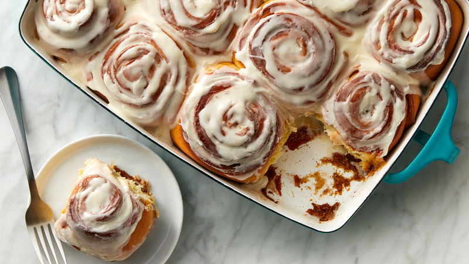

cinnamon rolls

Descripcion
La palabra mole proviene del vocablo nahuatl molli o mulli que significa salsa; su proceso culinario inicia en la epoca prehispanica donde se encuentra una amplia variedad de alimentos elaborados con diferentes tipos de salsas
Ingredients
- 8 Piezas Tomates verdes cocidos y escurridos, para el mole
- 1 1/2 Cucharadita Cebolla en polvo para el mole
- 1/2 Tableta Chocolate para mesa ABUELITA
- 3 Cucharadas Manteca de cerdo
- 1/4 Pieza Lechuga romana lavada y rebanada finamente, para las enchiladas
- 24 Piezas Tortillas de maíz fritas en aceite, para las enchiladas
- 3 Piezas Jitomate asados, para el mole
Steps
- Para el mole, licua el tomate verde, el chile ancho, el chile pasilla, las almendras tostadas, el cacahuate, el ajonjolí, la cebolla picada, pan molido, la canela, el clavo, el consome de pollo en polvo, el ajo con cebolla en polvo y el agua; cuela.
- Calienta una cacerola y funde la manteca; fríe lo que licuaste y cocina durante 10 minutos moviendo constantemente. Agrega el Chocolate ABUELITA® para Mesa y continúa la cocción por 10 minutos más o hasta que espese un poco.
- Cubre las tortillas con el mole, dóblalas y adorna con la lechuga y el ajonjolí.